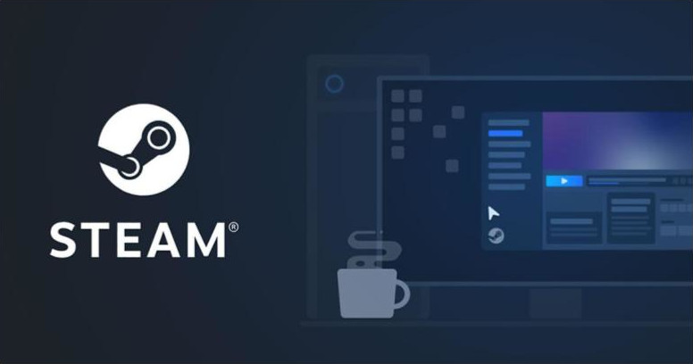
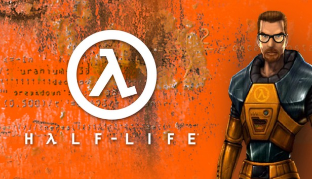
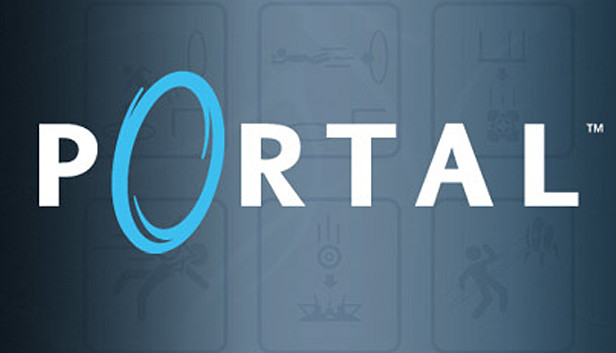
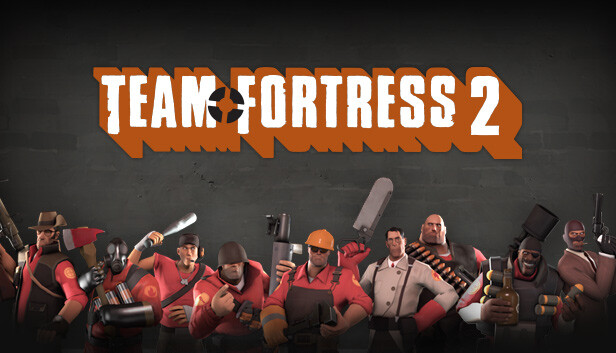

STEAM: Gaming's top distributor
As the gaming industry transitioned from distribution via physical media to digitalized distribution
channels, one company emerged as the go to stop for distributing and purchasing games: Steam.

The biggest advantage that Steam has over its competitors is the fact that it is privately owned.
Other companies often have investors to answers to which demand monetary growth, often at the expense
of its userbase. As a private company, they have no investors to answers to so they could make descisions that
are more aligned with that their userbase wants.

The Man at the Helm: Gabe Newell
The owner of Steam, and its parent company Valve, is Gabe Newell. One of Valve's first developed games is a first-person shooter
named Half-life. Some other popular games that Valve has developed include Portal and Team Fortress 2. With the development of these
new games, the need for a centralized place to launch them has risen and thus led to the development of Steam.

Displayed in order(Top to Bottom, Left to Right): Half-life, Portal, Team Fortress 2